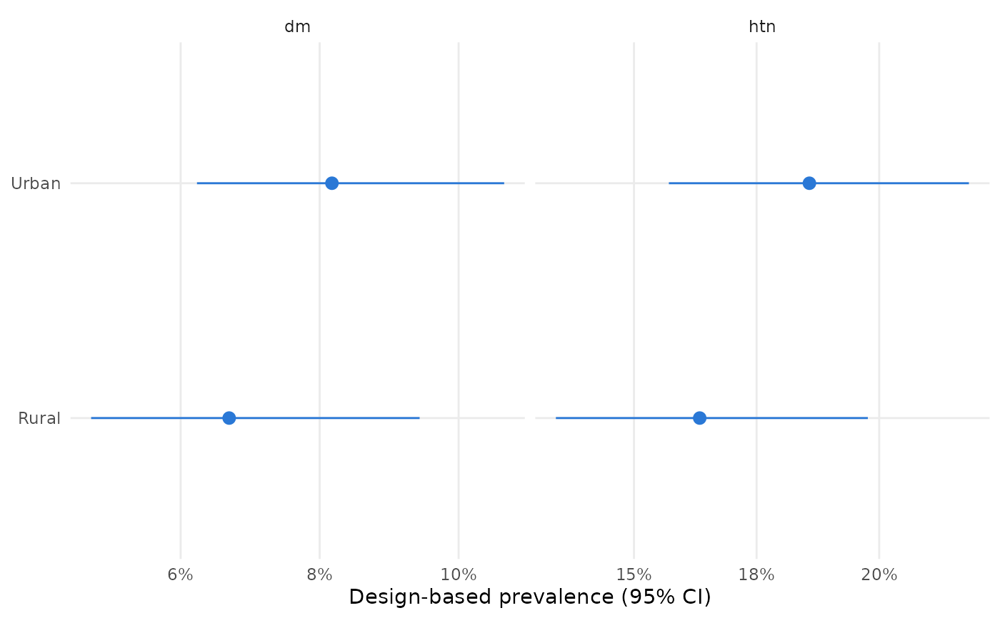
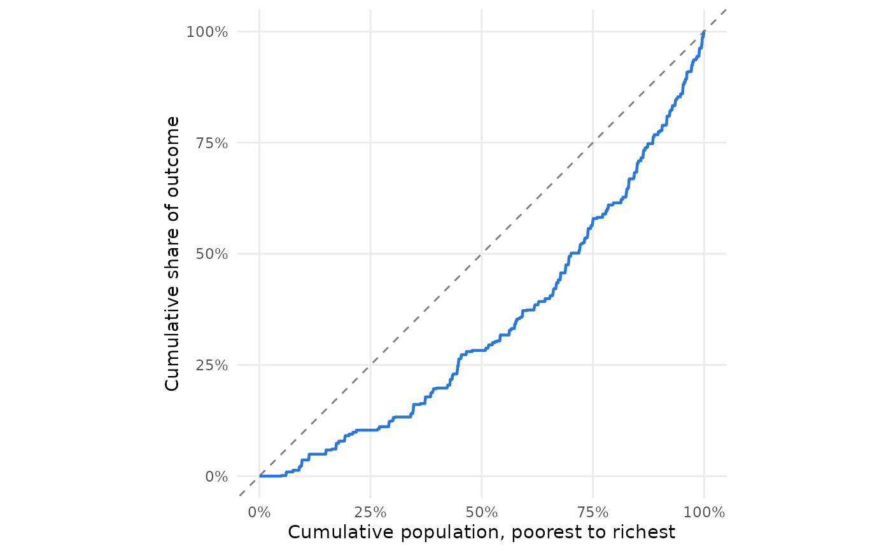

autoplot() methods for the results of survey_prevalence(),
mm_prevalence(), survey_concentration_index(),
survey_concentration_curve() and mm_patterns(). Each returns a
ggplot object that can be modified with the usual ggplot2 layers.
Usage
# S3 method for class 'surveyncd_prevalence'
autoplot(object, ...)
# S3 method for class 'surveyncd_mm_prevalence'
autoplot(object, ...)
# S3 method for class 'surveyncd_ci'
autoplot(object, ...)
# S3 method for class 'surveyncd_curve'
autoplot(object, ...)
# S3 method for class 'surveyncd_patterns'
autoplot(object, ...)Examples
d <- ncd_survey
d$htn <- recode_binary(d$htn_raw, yes = 1, no = 2)
#> Warning: Some values matched neither `yes` nor `no`; leaving them as NA.
d$dm <- recode_binary(d$dm_raw, yes = 1, no = 2)
#> Warning: Some values matched neither `yes` nor `no`; leaving them as NA.
des <- survey::svydesign(ids = ~psu, strata = ~stratum, weights = ~wt,
data = d, nest = TRUE)
ggplot2::autoplot(survey_prevalence(des, c("htn", "dm"), by = "residence"))

ggplot2::autoplot(survey_concentration_curve(des, dm, wealth_score))
